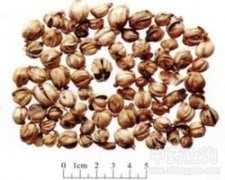

豆蔻

拼音
Dòu Kòu
别名
圆豆蔻、白豆蔻、紫蔻、十开蔻
来源
本品为姜科植物白豆蔻Amomum kravanh Pierre ex Gagnep。或爪哇白豆蔻Amomum compactum Soland ex Maton 的干燥成熟果实。按产地不同分为“原豆蔻”和“印度尼西亚白蔻”。
生境分布
生于山沟阴湿处，我国多栽培于树荫下。海南、云南、广西有栽培。原产于印度尼西亚。
药材特点
多年生草本。叶披针形，顶端有长尾尖，除具缘毛外，两面无毛；无叶柄。叶舌初被疏长毛，后脱落而仅有疏缘毛；叶鞘口无毛；穗状花序圆柱形；苞片卵状长圆形；花萼管被毛；花冠白色或稍带淡黄；唇瓣椭圆形，稍凹入，淡黄色，中脉有带紫边的桔红色带；雄蕊1；子房被长柔毛。花期2～5月，果期6～8月。
性状
原豆蔻：呈类球形，直径1。2～1。8cm。表面黄白色至淡黄棕色，有3条较深的纵向槽纹，顶端有突起的柱基，基部有凹下的果柄痕，两端均具有浅棕色绒毛。果皮体轻，质脆，易纵向裂开，内分3室，每室含种子约10粒；种子呈不规则多面体，背面略隆起，直径3～4mm，表面暗棕色，有皱纹，并被有残留的假种皮。气芳香，味辛凉略似樟脑。 印度尼西亚白蔻：个略小。表面黄白色，有的微显紫棕色，果皮较薄，种子瘦瘪。气味较弱。
性味
辛，温。
功能主治
化湿消痞，行气温中，开胃消食。用于湿浊中阻，不思饮食，湿温初起，胸闷不饥，寒湿呕逆，胸腹胀痛，食积不消。
用法用量
3～6g，入煎剂宜后下。
化学成分
含桉油精、d- 龙脑、b-蒎烯、a-松油醇等。
药理作用
1：无药理作用数据
摘录
《中国药典》